11. Skirstinio parinkimas duomenims
Šio skyriaus medžiaga nėra skirta šių metų kursui, todėl jos nenagrinėkite.
Skirstinio parinkimas – tai procedūra, kuomet statistiniai duomenys aprašomi geriausiai juos atitinkančiu teoriniu modeliu – skirstiniu. Modelio parinkimas prasideda tuo, kad pirmiausia nustatome, kokį atsitiktinį dydį modeliuosime – tolydųjį ar diskretųjį. Tada nusprendžiame, kurie skirstiniai (normalieji, binominiai, geometriniai ar kiti) geriausiai tiktų mūsų duomenims ir iškeltai mokslinei problemai spręsti. Išsirinkę skirstinius, apskaičiuojame tinkamiausius jų parametrus (pvz., \(\mathcal{N}(257; 35)\), \(\mathcal{B}(7; 0,22)\), \(\mathcal{P}(3)\)). Galiausiai grafiškai ir/arba pagal suderinamumo kriterijus nustatome, ar bent vienas teorinis modelis pakankamai gerai aprašo duomenis, ir jei taip, tai kuris. Kai modelis sudarytas, juo galime naudotis.
Norint išsirinkti tinkamą modelį, patartina išbandyti kelis variantus ir pažiūrėti, kuriuo atveju turimi empiriniai duomenys labiausiai atitinka teorinius. Gali būti, kad vienodai gerai tiks keli variantai. Tokiu atveju, rinkitės lengviausiai interpretuojamą modelį. Deja, gali netikti nei vienas.
Prieš pereidami prie kito skyriaus, panagrinėkime diskrečiųjų duomenų pavyzdį, kuriems modelis parinktas naudojantis teorinėmis žiniomis ir literatūra (paveikslas 11.1). Duomenys – šešis vaikus auginančių šeimų apklausos rezultatai. Tyrimo metu siekta nustatyti, kiek berniukų auga tokiose šeimose (tiksliau, įvertinti berniukų skaičiaus pasiskirstymą). Teoriškai tokiai situacijai galima naudoti binominį modelį, pvz., \(\mathcal{B}(6; 0,51)\). Modelio parametras \(n = 6\) parinktas todėl, kad šeimose yra 6 vaikai, tad vienoje šeimoje gali būti iki 6 berniukų, o parametras \(p = 0,51\) (tikimybė, kad gims berniukas), sakykime, paimtas iš literatūros. Jei vieno ar abiejų parametrų nežinome, juos galime pasirinkti grįsdami teorinėmis žiniomis, pvz., perskaityta literatūra, arba apskaičiuoti iš duomenų naudodami tolimesniuose skyriuose aprašytus metodus.
Pav. 11.1: Pavyzdys: dešimties šeimų, kuriose auga šeši vaikai, apklausos rezultatai, jų apibendrinimas ir palyginimas su teoriniu modeliu. Duomenų lentelė – tai pradiniai duomenys. Dažnių lentelė – empirinių duomenų skirstinys. Grafike – empirinių santykinių dažnių (juodos linijos) palyginimas su teorinio binominio modelio \(\mathcal{B}(6; 0,51)\) tikimybėmis (raudonos linijos). Galima numanyti, kad turint didesnę imtį empiriniai duomenys geriau atitiks modelį.
Turimiems duomenims modelius galima parinkti visiškai „mechaniškai“ naudojantis įvairiais algoritmais bei statistinių paketų funkcijomis. Visgi prisiminkite, kad tai tik įrankiai, padedantys išspręsti jūsų tyrimo metu suformuluotą mokslinę problemą. Tam, kad modelis būtų prasmingas, tiek modelio, tiek jo parametrų prasmę reiktų suprasti ir interpretuoti savo tyrimo kontekste (kartais tam gali prireikti papildomos literatūros analizės). Ši idėja glaudžiai siejasi su kita mintimi: jei galite rinktis iš kelių panašaus „gerumo“ modelių, rinkitės paprastesnį ir lengviau interpretuojamą.
11.1 Skaitiniai būdai modelio ir duomenų suderinamumui vertinti
Statistikų (kriterijų), pagal kurias galima vertinti empirinių duomenų ir teorinio modelio atitikimo „gerumą“, yra daug (pvz., \(\chi^2\) statistika, Kolmogorovo-Smirnovo D statistika, AIC – Akaikės informacinis kriterijus, BIC – Bajeso informacinis kriterijus ir kitos). Jos turi savų pliusų ir savų minusų priklausomai nuo duomenų savybių. Visgi, kaip žinoti, kuris modelis iš kelių lyginamų yra tinkamesnis, jei sprendžiame pagal skaitinius kriterijus? Bendras principas yra toks: įprastai statistikos (kriterijai) tam tikru būdu vertina skirtumus tarp teorinių modelių ir empirinių duomenų, tad kuo statistikos reikšmė arčiau nulio (t. y., kuo skirtumas yra mažesnis), tuo duomenys geriau atitinka modelį.
Įprastai kuo statistikos ar kriterijaus, vertinančio modelio ir duomenų suderinamumą, reikšmė arčiau nulio, tuo duomenys labiau suderinami su modeliu.
Prisiminkite, kad kriterijaus statistika ir statistinio testo p reikšmė – tai du skirtingi dalykai.
Pavyzdys 1. Lyginami duomenys ir tolydieji skirstiniai („Modelis-1“, „Modelis-2“, „Modelis-3“). Gaunami rezultatai:
## Goodness-of-fit statistics
## Modelis-1 Modelis-2 Modelis-3
## Kolmogorov-Smirnov statistic 0.1138 0.412 0.165
## Cramer-von Mises statistic 0.0695 3.884 0.206
## Anderson-Darling statistic 0.3590 18.609 1.160
##
## Goodness-of-fit criteria
## Modelis-1 Modelis-2 Modelis-3
## Akaike's Information Criterion 486 1022 496
## Bayesian Information Criterion 490 1027 501Žymėjimai: „Goodness-of-fit“ – suderinamumas.
Labiausiai su duomenimis suderinamas „Modelis-1“, prasčiausiai – „Modelis-2“.
Pavyzdys 2. Lyginami duomenys ir diskretieji skirstiniai („Modelis-A“, „Modelis-B“, „Modelis-C“). Gaunami rezultatai:
## Chi-squared statistic: 8.2 6.4 147
## Degree of freedom of the Chi-squared distribution: 4 4 4
## Chi-squared p-value: 0.086 0.17 8.1e-31
## Chi-squared table:
## obscounts theo Modelis-A theo Modelis-B theo Modelis-C
## <= 1 31 35 25 84
## <= 2 43 42 43 28
## <= 3 47 45 53 21
## <= 4 35 35 43 16
## <= 5 32 22 24 12
## > 5 12 21 12 39
##
## Goodness-of-fit criteria
## Modelis-A Modelis-B Modelis-C
## Akaike's Information Criterion 756 760 921
## Bayesian Information Criterion 759 763 925Iš šių rezultatų matome, kad kiekvienam modeliui („Modelis-A“, „Modelis-B“, „Modelis-C“) \(\chi^2\) statistikos reikšmės yra atitinkamai \(8.16\), \(6.38\) bei \(147\), o \(\chi^2\) suderinamumo kriterijaus (statistinio testo) p reikšmės yra atitinkamai \(0.0859\), \(0.172\) bei \(8.09\cdot 10^{-31}\). BIC ir AIC kriterijų reikšmes taip pat matome. Žymėjimai: „obscounts“ – empiriniai dažniai (angl. observed counts), „theo“ – teoriniai dažniai.
Pagal \(\chi^2\) statistikos reikšmę galime vertinti, kad empiriniai duomenys ir „Modelis-B“ suderinami labiausiai, o „Modelis-C“ – prasčiausiai (turbūt, apskritai nesuderinamas). Nors skirtumas tarp suderinamumo su A ir B modeliais – ganėtinai menkas.
Funkcijos, kurios sugeneravo šiuos pavyzdžius, aprašomos skyriuje „Palyginimas naudojant skaitines statistikas“.
Užduotis 11.1 Duomenims bandoma parinkti tinkamą tikimybinį modelį.
- Kiekvienam modeliui (pažymėkime juos raidėmis nuo A iki E) \(\chi^2\) statistikos reikšmės yra 264, 12.6, 23, 103, 22.3. Išrikiuokite modelius nuo labiausiai iki prasčiausiai suderinamo su duomenimis.
- Kitiems dviems modeliams Kolmogorovo-Smirnovo D statistikos reikšmės yra 0.35 ir 0.115. Kuris modelis labiau suderinamas su duomenimis?
11.2 Paketas fitdistrplus teoriniam modeliui parinkti
Duomenims teorinį modelį galima parinkti naudojant funkciją fitdist() iš paketo fitdistrplus. Ši funkcija tinka ir tolydiesiems, ir diskretiesiems skirstiniams parinkti. Darbo eiga daugmaž tokia:
# Užkraunamas paketas
library(fitdistrplus)
# Įkeliami duomenys
data(npk)
dplyr::glimpse(npk)
# Pasirenkamas analizuojamas kintamasis
derlius <- npk$yield
# (Papildomas nebūtinas žingsnis)
# Aprašomas skirstinys.
# Pagal asimetrijos ir eksceso koeficientus nubraižoma, į kokį teorinį skirstinį
# panašus mūsų duomenų pasiskirstymas.
descdist(derlius, discrete = FALSE, boot = 1000)
# Pasirenkamas skirtinio tipas.
# Tada programa apskaičiuoja labiausiai tinkančius parametrus.
# Sukuriamas modelio objektas.
modelis_normal <- fitdist(derlius, distr = "norm")
# Modelio suvestinė
summary(modelis_normal)
# Patikrinama, kokie modelio parametrai parinkti
coef(modelis_normal)
# Skaitinės modelio ir duomenų suderinamumo charakteristikos
gof_rez <- gofstat(modelis_normal)
gof_rez
# Chi-kvadratu suderinamumo testo p reikšmė.
# Tinka tik didelėms imtims (didesnėms už 30),
# jei p < 0.05 - skirtumas tarp modelio ir duomenų statistiškai reikšmingas.
# Apie praktinį reikšmingumą spręsti pagal grafikus.
gof_rez$chisqpvalue
# Grafinis palyginimas
plot(modelis_normal) # Linijos turi būti panašiosDabar panagrinėkime šių funkcijų rezultatus.
Užsikraukime paketą:
library(fitdistrplus)Įsikeliame duomenis. Pavyzdyje duomenys iš paketo. Darbinėje situacijoje įprastai duomenis įsikelsime iš duomenų bylos. Įsikėlę duomenis peržiūrime naudodami glimpse ar panašią funkciją.
data(npk)
dplyr::glimpse(npk)
## Observations: 24
## Variables: 5
## $ block <fct> 1, 1, 1, 1, 2, 2, 2, 2, 3, 3, 3, 3, 4, 4, 4, 4, 5, 5, 5,...
## $ N <fct> 0, 1, 0, 1, 1, 1, 0, 0, 0, 1, 1, 0, 1, 1, 0, 0, 1, 0, 1,...
## $ P <fct> 1, 1, 0, 0, 0, 1, 0, 1, 1, 1, 0, 0, 0, 1, 0, 1, 1, 0, 0,...
## $ K <fct> 1, 0, 0, 1, 0, 1, 1, 0, 0, 1, 0, 1, 0, 1, 1, 0, 0, 0, 1,...
## $ yield <dbl> 49.5, 62.8, 46.8, 57.0, 59.8, 58.5, 55.5, 56.0, 62.8, 55...Paketo fitdistrplus funkcijos skirtos darbui su duomenų eilutėmis (vektoriais), o ne duomenų lentelėmis, kaip tidyverse sistemoje. Analizei naudosime kintamojo yield iš duomenų lentelės npk reikšmes, tad jas priskirsime duomenų eilutei derlius:
derlius <- npk$yieldSukuriame normaliojo ats.d. modelį ir pavadiname „modelis_normal“. Pavadinti galime kaip norime, bet rekomenduojamas prasmingas pavadinimas.
modelis_normal <- fitdist(derlius, distr = "norm")Galime pasirinkti ir kitą modelį, parašydami trumpąjį jo pavadinimą. Pavadinimų pavyzdžiai pateikti lentelėse 10.2, 10.3. Jei norite daugiau pavyzdžių ir paaiškinimų, pastudijuokite funkcijos dokumentaciją surinkę komandą ?fitdist.
Toliau dirbsime su sukurtuoju modeliu „modelis_normal“ ir tikrinsime, kaip gerai duomenys atitinka šį modelį.
Modelio suvestinę atlieka funkcija summary():
summary(modelis_normal)
## Fitting of the distribution ' norm ' by maximum likelihood
## Parameters :
## estimate Std. Error
## mean 54.875000 1.2334776
## sd 6.042782 0.8722003
## Loglikelihood: -77.22727 AIC: 158.4545 BIC: 160.8106
## Correlation matrix:
## mean sd
## mean 1.00000000000000 -0.00000000382215
## sd -0.00000000382215 1.00000000000000Pirmame sakinyje, prasidedančiame žodžiais „Fitting of the distribution“, nurodomas taikytas modelis (t. y., „norm“) ir parametrų apskaičiavimo metodas („maximum likelihood“ – didžiausio tikėtinumo metodas). Suvestinės skiltyje „Parameters:“ matome apskaičiuotus normaliojo skirstinio parametrų (mean – vidurkis ir sd – standartinis nuokrypis) įverčius ir jų standartines paklaidas (standartinės paklaidos yra šių įverčių standartiniai nuokrypiai). Taip pat kitus modelio „gerumo“ įverčius, kurių nenagrinėsime. Koreliacijos matricos („Correlation matrix:“) taip pat nenagrinėsime.
Jei jus domina tik parinkti modelio parametrai, o ne visa suvestinė, naudokite funkciją coef():
coef(modelis_normal)
## mean sd
## 54.875000 6.042782Įvairios statistikos, pagal kurias įvertinama, kaip gerai duomenys atitinka modelį, gali būti gautos naudojant funkciją gofstat() (nuo angl. goodness-of-fit statistics):
gof_rez <- gofstat(modelis_normal)
gof_rez
## Goodness-of-fit statistics
## 1-mle-norm
## Kolmogorov-Smirnov statistic 0.09158520
## Cramer-von Mises statistic 0.02949152
## Anderson-Darling statistic 0.20037302
##
## Goodness-of-fit criteria
## 1-mle-norm
## Akaike's Information Criterion 158.4545
## Bayesian Information Criterion 160.8106Tinkamiausios statistikos parenkamos pagal tai, kokį teorinį modelį (pvz., diskretųjį ar tolydųjį) taikome, nebent nurodysite kitaip (kaip tai padaryti skaitykite įvedę komandą ?gofstat). Įprastai norime, kad šių statistikų reikšmės būtų kuo arčiau nulio.
Chi-kvadratu \((\chi^2)\) suderinamumo testas (angl. chi-square goodness-of-fit test) skirtas patikrinti hipotezę, ar duomenys ir modelis pakankamai gerai suderinami. Apie šį statistinį kriterijų plačiau rašoma Čekanavičiaus ir Murausko vadovėlyje „Statistika ir jos taikymai I“. Jei tenkinamos \(\chi^2\) kriterijui taikyti reikiamos prielaidos, didelė p reikšmė \((p>0,05)\) rodo, kad duomenys ir modelis pakankamai gerai suderinami.
round(gof_rez$chisqpvalue, 3)
## [1] 0.383Grafiniam teorinio modelio ir empirinių duomenų palyginimui gali būti naudojamos funkcijos plotdist() arba tiesiog plot(). Taip bus nubraižomi 4 tipų grafikai:
plot(modelis_normal)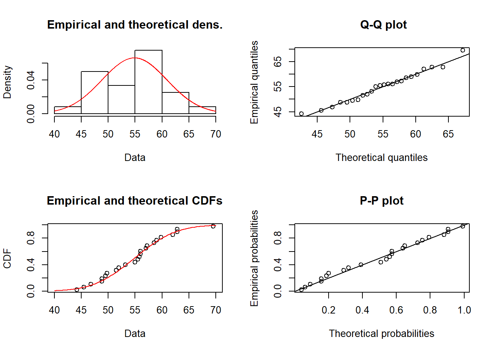
Šiame pavyzdyje raudonai žymima teorinė kreivė. Daugiau informacijos apie galimus parametrus skaitykite funkcijos dokumentacijoje (?plotdist).
Kiekvieno tipo grafiką galima nubraižyti atskirai naudojant funkcijas cdfcomp (sukauptojo santykinio dažnio diagrama lyginama su teorine tikimybių pasiskirstymo kreive), denscomp (teorinis tikimybių tankio grafikas lyginamas su empirine histograma), ppcomp (tikimybių-tikimybių – p-p – diagrama) ir qqcomp (kvantilių-kvantilių – q-q – diagrama). Šių funkcijų parametras addlegend kontroliuoja, ar braižyti legendą.
cdfcomp(modelis_normal, addlegend = FALSE)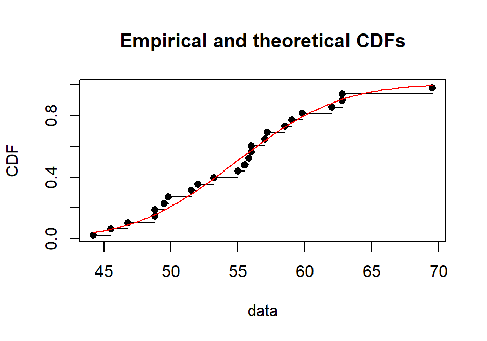
denscomp(modelis_normal)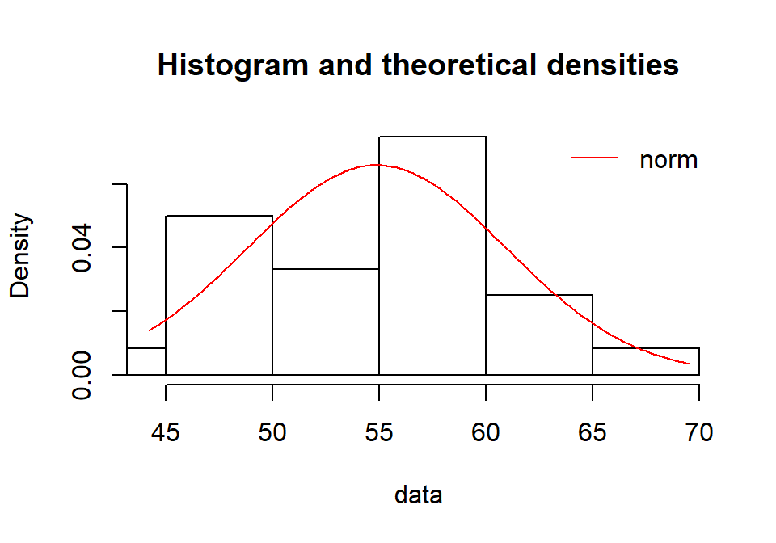
ppcomp(modelis_normal, addlegend = FALSE)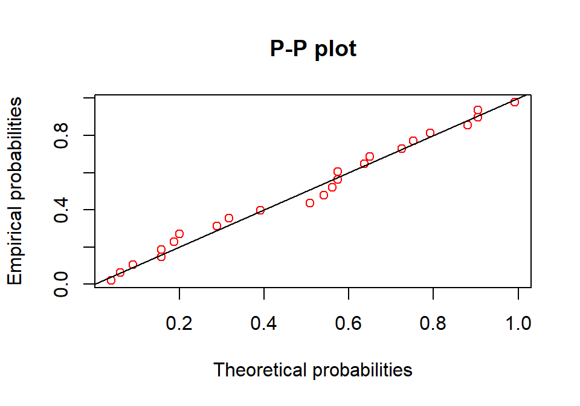
qqcomp(modelis_normal, addlegend = FALSE)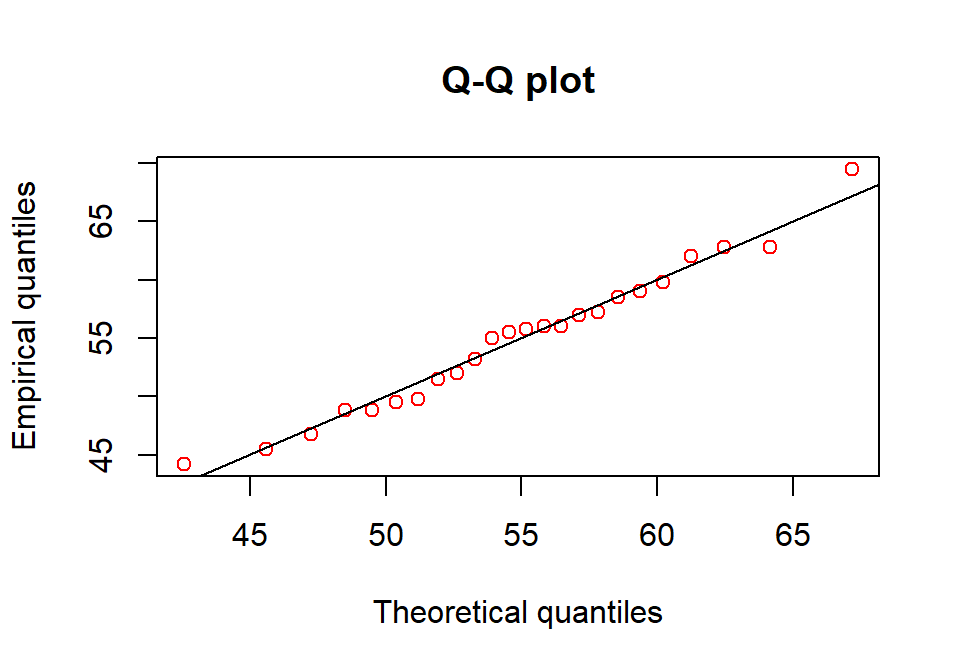
Analogiškai galime sukurti ir log-normalųjį ar kitokį modelį.
Užduotis 11.2
- Naudodami kodą:
fit_lognorm <- fitdist(derlius, distr = 'lnorm')Sukurkite log-normalųjį modelį ir jį patyrinėkite aukščiau išvardintomis funkcijomis (summary(), plot() ir kitomis). - Nuspręskite, kuris modelis – normalusis ar log-normalusis – šiems duomenims labiau tinka? (Tam papildomai reikia susikurti normalųjį modelį.)
11.3 Kelių modelių palyginimas (paketas fitdistrplus)
Palyginimas grafiškai
Duomenys toxocara – salose gyvenančių laukinių kačių parazitų tyrimas.
data(toxocara)
parazitu_skaicius <- toxocara$numberhist(parazitu_skaicius)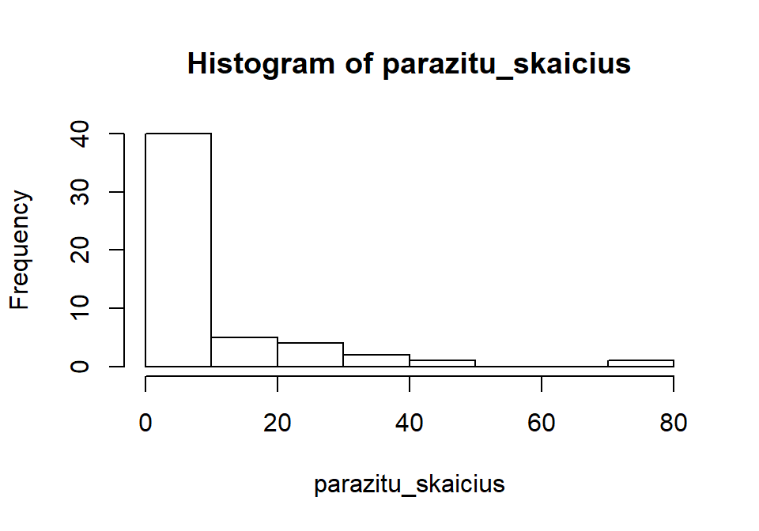
summary(parazitu_skaicius)
## Min. 1st Qu. Median Mean 3rd Qu. Max.
## 0.000 0.000 2.000 8.679 9.000 75.000Grafiškai patikrinkime, kuris teorinis modelis labiau tinka parazitų skaičių katėse aprašyti – Puasono ar neigiamas binominis?
# Modelių kūrimas
model_p <- fitdist(parazitu_skaicius, "pois")
model_nb <- fitdist(parazitu_skaicius, "nbinom")
# Sudarome modelių sąrašą
modeliu_sarasas <- list(model_p, model_nb)
# Susirašome modelių pavadinimus
pavadinimai <- c("Puasono", "Neigiamas binominis")Palyginame grafiškai:
plot(model_p)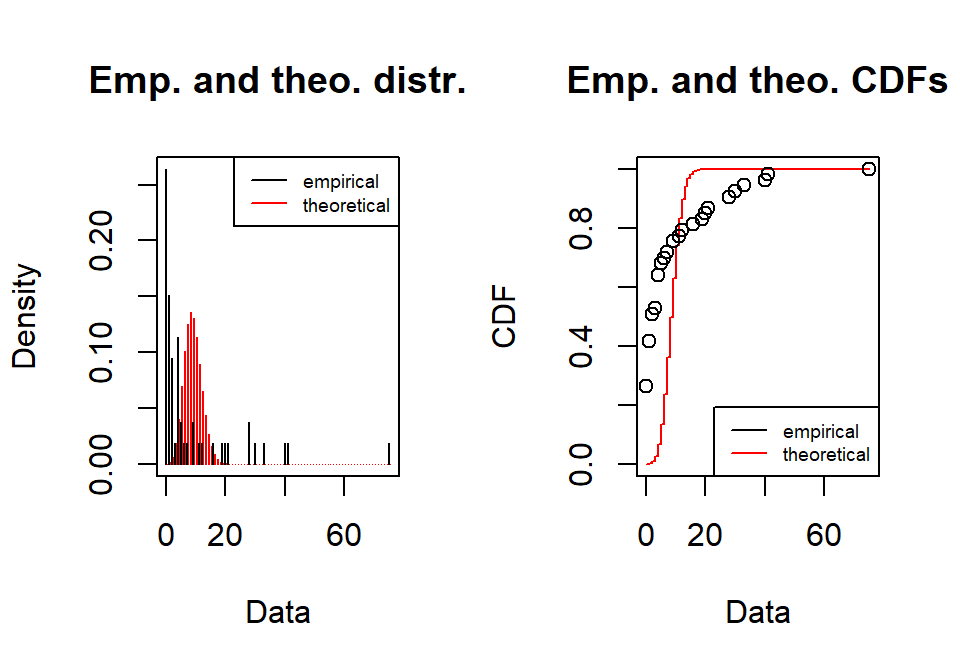
plot(model_nb)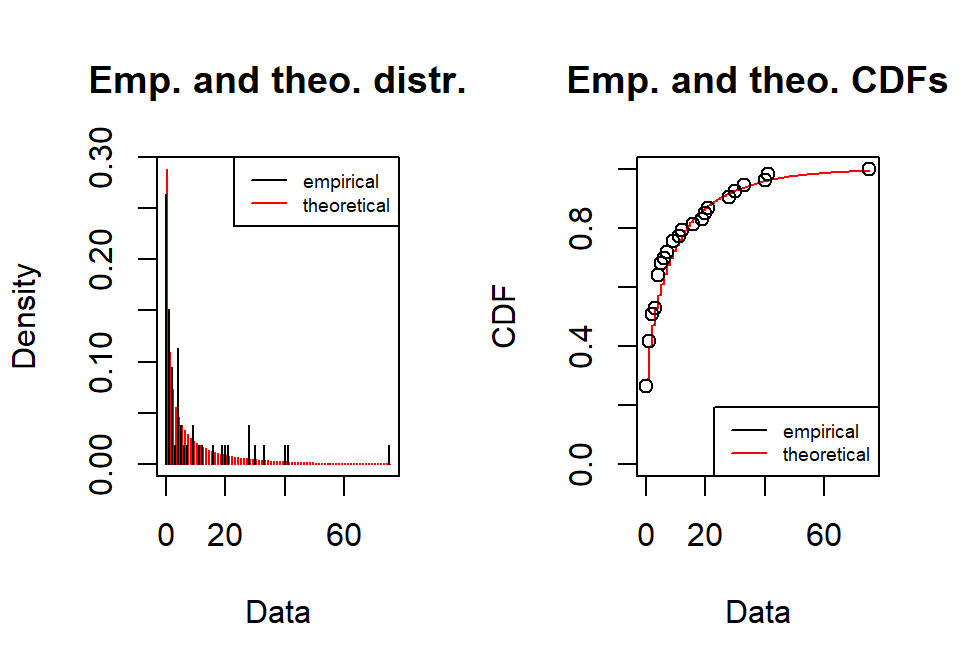
Lyginame grafiškai viename grafike (naudojant firdistrplus, diskretiesiems duomenims yra mažiau grafinio atvaizdavimo galimybių nei tolydiesiems):
cdfcomp(modeliu_sarasas, legendtext = pavadinimai)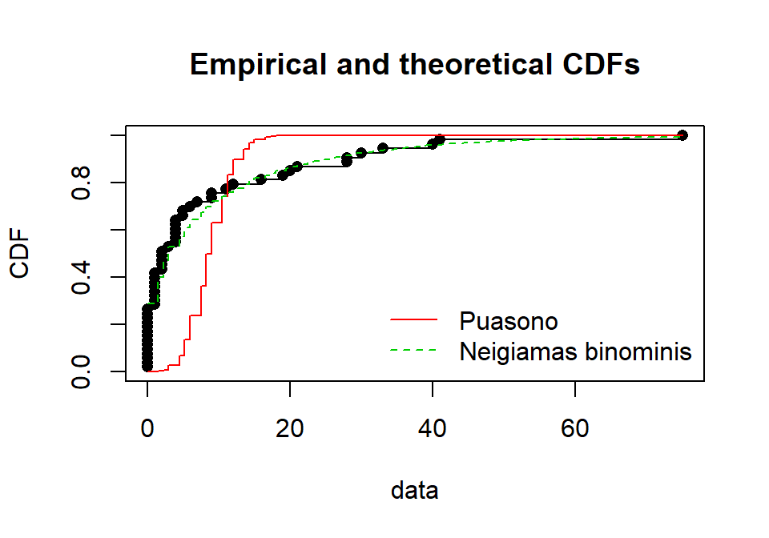
Atrodo, kad neigiamas binominis modelis (žalia linija) labiau atitinka empirinius duomenis (juodi taškai), nei Puasono modelis (raudona linija).
qqcomp(modeliu_sarasas, legendtext = pavadinimai)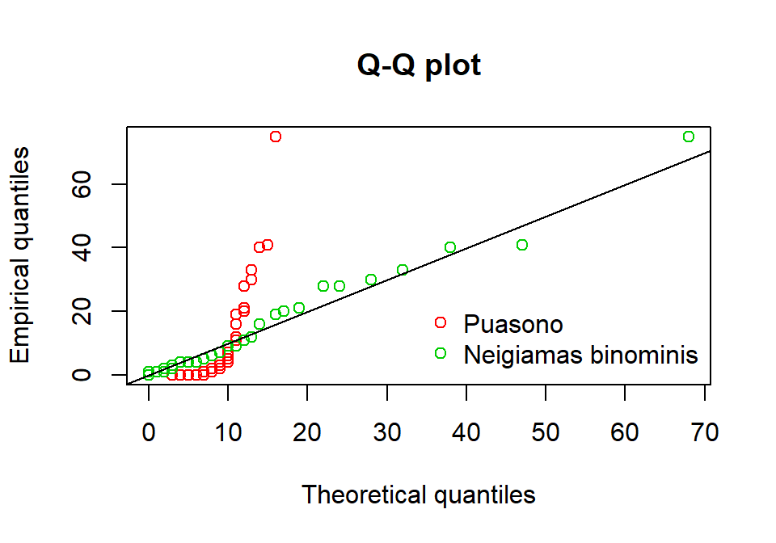
Jei išbandytumėte, pastebėtumėte, kad dvi kitos funkcijos nėra tinkamos mūsų turimiems diskretiesiems duomenims lyginti su teoriniais modeliais.
denscomp(modeliu_sarasas, legendtext = pavadinimai, demp = TRUE)
ppcomp(modeliu_sarasas, legendtext = pavadinimai)Palyginimas naudojant skaitines statistikas
Jei norite lyginti pagal skaitines statistikas, galite naudoti funkciją gofstat():
gofstat(modeliu_sarasas)
## Chi-squared statistic: 31256.96 7.48606
## Degree of freedom of the Chi-squared distribution: 5 4
## Chi-squared p-value: 0 0.1123255
## the p-value may be wrong with some theoretical counts < 5
## Chi-squared table:
## obscounts theo 1-mle-pois theo 2-mle-nbinom
## <= 0 14 0.009014207 15.295027
## <= 1 8 0.078236512 5.808596
## <= 3 6 1.321767215 6.845015
## <= 4 6 2.131297776 2.407815
## <= 9 6 29.827829221 7.835196
## <= 21 6 19.626223732 8.271110
## > 21 7 0.005631339 6.537242
##
## Goodness-of-fit criteria
## 1-mle-pois 2-mle-nbinom
## Akaike's Information Criterion 1017.067 322.6882
## Bayesian Information Criterion 1019.037 326.6288Tam, kad būtų paprasčiau suprasti, kur kuris modelis, galite nurodyti pavadinimus:
gofstat(modeliu_sarasas, fitnames = pavadinimai)
## Chi-squared statistic: 31256.96 7.48606
## Degree of freedom of the Chi-squared distribution: 5 4
## Chi-squared p-value: 0 0.1123255
## the p-value may be wrong with some theoretical counts < 5
## Chi-squared table:
## obscounts theo Puasono theo Neigiamas binominis
## <= 0 14 0.009014207 15.295027
## <= 1 8 0.078236512 5.808596
## <= 3 6 1.321767215 6.845015
## <= 4 6 2.131297776 2.407815
## <= 9 6 29.827829221 7.835196
## <= 21 6 19.626223732 8.271110
## > 21 7 0.005631339 6.537242
##
## Goodness-of-fit criteria
## Puasono Neigiamas binominis
## Akaike's Information Criterion 1017.067 322.6882
## Bayesian Information Criterion 1019.037 326.6288Atrodo, neigiamas binominis skirstinys tinka labiau. Kaip apie tai nusprendžiau rašoma 11.1 skyriuje.
11.4 Jei duomenys pateikti kaip dažnių lentelė (fitdistrplus)
Jei dirbate su diskrečiaisiais duomenimis ir turite dažnių lentelę, tada ją reikia pasiversti į vektorių naudojant funkciją rep().
Pavyzdys. Nuskaitome duomenis:
library(data.table)duomenys <- fread(
"x dažnis
0 26
1 43
2 48
3 42
4 29
5 6
6 5
8 1")Dažnių lentelę pasiverčiame į duomenų eilutę (vektorių):
vektorius <- rep(x = duomenys$x, times = duomenys$dažnis)Toliau su duomenis analizuojame įprastiniu būdu.
model_poisson <- fitdist(vektorius, distr = "pois")plot(model_poisson)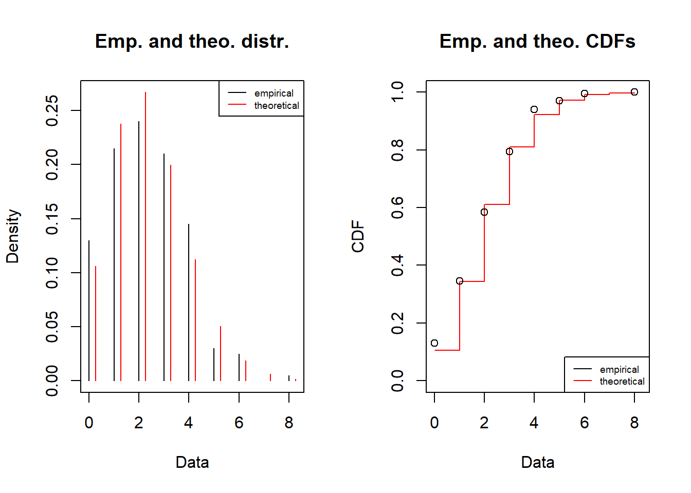
summary(model_poisson)
## Fitting of the distribution ' pois ' by maximum likelihood
## Parameters :
## estimate Std. Error
## lambda 2.245 0.1059481
## Loglikelihood: -358.8056 AIC: 719.6111 BIC: 722.9094coef(model_poisson)
## lambda
## 2.245Užduotis 11.3 Duota dažnių lentelė (k – kintamojo reikšmės, Freq – dažnis). Ją reikia pasiversti į vektorių ir patikrinti, kuris modelis – Puasono, binominis ar neigiamas binominis – labiau tinkamas. Naudokite paketą fitdistrplus.
| k | Freq |
|---|---|
| 0 | 79 |
| 1 | 72 |
| 2 | 38 |
| 3 | 10 |
| 5 | 1 |
Darbui su kategoriniais duomenimis patogesnė funkcija vcd::goodfit(). Deja, šių pratybų metu paketo vcd funkcijų nenagrinėsime.